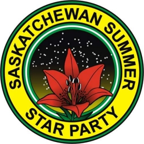

|


Cypress Hills Interprovincial
Park
(Centre Block -
30km South of Maple Creek on Hwy 21)
August 24th to August 27th, 2006
An event organized by the Saskatoon
and Regina Centres
of the Royal Astronomical Society of Canada
Scott Young
Manager, Planetarium and Science Gallery, The Manitoba Museum
and the National President of the Royal Astronomical Society of Canada
Pluto vs. the Ice Dwarves: Conflict at the Ragged Edge of the Solar System
Recent discoveries at the edge of the solar system have changed the way we look at planets. What is a planet, and what is not? What is Pluto? What is "Xena", and why doesn't it have a real name yet? What are the other strange denizens of the outer solar system? This talk will review the current state of knowledge of the outer solar system, delve into the debate about Pluto's planethood, and preview the New Horizons mission, set to fly by Pluto in 2015.
Fire ban: As of August 1, there was an open-fire ban at the Meadows due to very dry conditions. Campers should be aware. Cooking with gas cookstoves is allowed for meal preparation.
Meadows official lights-off dates will be: Wednesday August 23 through and including Sunday August 27. We *might* be able to include Tuesday August 28. On nights prior and after, lights will be on. However, the lights at the Meadows are full cut-off and meet LPA/DSP requirements and observing from 30 metres away will present a very dark sky regardless.
A reminder that Early Registration has ended! New rates apply (see below). Please try to to pre-register if possible.
One-day registration costs for Saturday alone are: Singles $20, Couples $30, Families $40.
Registration - Early
Registration ends August 1!!
THE FOLLOWING SCHEDULE IS SUBJECT TO CHANGE. CHECK BACK OFTEN.
THURSDAY AUGUST 24
Book Launch by Mike and Anna Clancy
Author and Saskatoon members Mike and Anna Clancy have written a
book entitled :"A Users Guide to Saskatchewan Parks" which describes all
Provincial, National and Regional Parks in Saskatchewan. They also rate
parks according to their compatability with astronomical observing, and give
credit to the CHIPP Dark-Sky Preserve and other dark-sky and
astronomical initiatives in these Parks.
These books will be for sale at the Star Party. Mike Clancy will be in
attendance during the SSSP weekend, and will be having a book launch and
signing at the Park Recreation Hall (log cabin) at 3:30 pm on Saturday,
August 26. This unfortunately coincides with the main afternoon SSSP
talks, but Mike Clancy has agreed to sign copies of books that you
purchase if you seek him out at other times during the star party.
Digital SLR Astrophotography
Workshop - run by Alan Dyer
THE WORKSHOP IS NOW FULL. ANY ADDITIONAL
REGISTRATIONS RECEIVED WILL BE PUT ON A WAITING LIST. CONTACT THE REGISTRARS FOR
MORE INFORMATION.
A 3-hour workshop to be held Friday August 25 1-4 pm in the
Resort's Wapiti Room. Alan Dyer will take you through all the steps,
from selecting a camera to processing the final image. While there
will be a limited discussion of web cams, fixed-lens point-and-shoot
cameras and low-cost imagers, the emphasis will be on digital SLR
cameras for prime-focus astrophotography.
If they wish, registrants can bring sample photos they would like
critiqued, either as prints, or as digital files on disk, USB drive,
or their own laptop. (Please, no slides!) We can set up a laptop
gallery, with people displaying their shots during the breaks, and
we could as a group analyze people's shots for suggested ways to
improve techniques.
Registrants are not required to, but could also bring their
cameras, for advice on how to set their camera or to get help with
their specific model. But they should also bring the instruction
manuals, as no one will be familiar with the operation of every
brand of camera. However, chances are we can find the right settings
with a little study of the menus and manuals. If registrants have
other equipment (adapters, guiders, etc.) or software they would
like assistance with, bring those, too. There is no need to bring a
complete astrophoto outfit to the seminar -- leave it out on the
field! But by all means bring in the bits you might have questions
about, or would like to show off to your colleagues -- some gear or
software you are very pleased with for example. We can all learn
from everyone's successes and techniques.
Free refreshments will be provided during the break.
Astrophotography Contest Rules
1. There will be four categories:
2. Only one photograph per category can be entered by the same individual.
3. A photograph can be entered in only one of the four categories
4. Winning photographs entered in the contest from previous years cannot be entered again.
Streetlights in the Meadows
Will Be OFF
Last year's issue with the newly-installed streetlights in the
Meadows has been resolved, and the Park has agreed that we can
extinquish the lights from Wednesday August 23 through and including
Sunday August 27, provided an SSSP organizer can be present during
that time (which is likely). If you will be using the Meadows
before or after these dates, you can set up 100 feet in any
direction away from the lights and still experience very dark skies,
since the lights meet light pollution requirements and are not
obtrusive from a short distance. The other option during lights-on
nights is to utilize another of the over 98,000 acres of pristine,
unlit areas that the Dark Sky Preserve has to
offer. T-Shirts and Golf
Shirts
New rates for 2006.
Early Registration
Late and At-the-Door
Registration
Singles - $20
Singles - $30
Couples - $30
Couples - $40
Families - $40
Families - $50
To register or to get more
information, contact:
E-Mail: sssp.sk@sasktel.net
Star Party
Events
Come early and stay late if you choose. Events take place in the
Resort's Wapiti Room (WR), the Meadows Campground (MC), the Park
Amphitheatre (PA) or the Tennis Courts (TC). Every day ends with
viewing in the MC.
FRIDAY AUGUST 25
SATURDAY AUGUST 26
SUNDAY AUGUST 27
"Pluto vs. the Ice
Dwarves: Conflict at the Ragged Edge of the Solar System" (WR)
Note that the
Astrophotography Workshop, Weiner Roast and the Banquet are
extra-cost events. Watch this space for more information as it
becomes available.
The shirt logo for this year's star party is shown above. This year we have available for order T-shirts, Golf-shirts,
button-down-the-front short sleeve shirts and new this year,
hoodies/ bunny hugs with front zipper. The background colour of the
shirts will be navy blue. Shirts should be ordered when you
pre-register for the star party. Shirts can also be ordered at SSSP,
but they will be shipped to you after the part is over, as another
print run may be necessary. There will be an additional charge for
re-orders due to printing and mailing costs. Prices are as follows:
Pre-order before August 1 - T-shirts are $17.00, Golf shirts
are $30.00, Buttoned short sleeve shirts are $35.00,
and Hoodies are $40.00; Available shirts and prices at SSSP -
T-shirts will be $25.00, Golf shirts will be $40.00.
Re-order prices - T-shirts are $30.00, Golf shirts are
$45.00, Buttoned short sleeve shirts are $50.00, and
Hoodies are $55.00. SSSP Pins
The pin design for this year's star party is not yet available.
Watch this space and check back often. SSSP 2006 pins will be available by pre-order and at-the-door for
$5. Pins from previous years are still
available. Thursday BBQ
The Thursday BBQ will be held at the Amphitheatre, which is near
the park's Camping Office. The BBQ will feature hot dogs, drinks and
salads. The price is $5 per person. We recommend that you pre-order
your BBQ tickets as that will let us know how much food to
buy. Banquet
The evening banquet will feature a menu similar to that of 2005.
Prices are: Adults, $23; Children 4-11 yrs., $12; under 4 yrs.,
free. Park Entry Fees
The SSSP is held in a provincial park, thus provincial park entry fees apply to your stay. Pay at the park gate as you enter. Park entry fees: daily -$7, 3-day - $17, weekly - $25, transferable - $50 Hotel, Cabin, Condo & Off-site Accommodation
To book hotel room, cabin or condo accommodation, contact the Resort (tel: 306-662-4477). Make sure you tell them you are "with the Star Party" and that "you want a room in our reserved block." Additional information about the Resort is available at their website: http://www.cypressresortinn.com/. This year our room block runs from Thursday through Saturday nights. There are also two nearby B&Bs: Camping at SSSP
For maps of the Meadows campground, see the end of this section. If you are camping in the Meadows you must have a valid camping permit for a tenting or powered site. There is a lot of room to camp at the Meadows Campground, where all the observing will occur. All campsites in Meadows are first come, first serve, except for 15 Reserve-a-Site spots described below. Pay the appropriate camping fees at the Camping Office. Tell the Campground Office that "you are with the star party" when you book or register for your camping and that "you want to camp in the Meadows". Note that the Meadows is a slightly more rustic campsite with water taps, outhouses, fire-pits, picnic tables and both treed and open camping sites. There is no service centre in the Meadows campground. Service centres with showers and flush toilets are available at Rainbow and Terrace campgrounds, a 7-minute walk from Meadows. The SSSP does NOT pay for anyones camping or power - this is your responsibility. Park rules for the number of tents per site apply ask the Campground Office. Because this event is late in the park season, we expect only SSSP participants to be camped in the Meadows for the event duration. If you want to set up with the main group of participants you will want to set up in powered campsites #31, #33 through #65, camp in the unpowered open area of the Meadows or in the ~ 40 unpowered campsites within the trees on the west, east and south parts of the field. Note that the park will assign only powered site campsites (as you arrive) and Reserve-a-Sites (in advance), and all other sites are first-come, first serve. You cannot tent on a powered site unless you have paid the power fee. If youd rather be secluded, you can chose a camping spot between the road and the trees campsites # 1 through #9, #25 through #30 & #38. Reserve-a-Site campsites (tel: 306-662-5484) #10 through #24 are also located between the road and trees. These can be booked in advance Monday to Friday during regular business hours, but they are away from the main group of observers. You can always set up your telescope in the main field and just leave it set up for the duration, and still camp away from the group. Meadows non-powered sites: $13 per night Meadows powered site: $18 per night (w/o service centre) Firewood permit (optional - your choice): daily - $3, 3-day - $5, weekly - $15 If you want to camp elsewhere, away from the event in Rainbow, Terrace or Warlodge campgrounds, these are the fees: Camping elsewhere non-powered site: $15 per night Camping elsewhere powered site: $20 per night (c/w service centre) Due to space and power capacity requests, we request that those who occupy a powered site share their power plugs & possibly allow tenting on the corners of your site. You may run extension cords from the power pole, but you should offer a "sublet" fee to whoever is renting the power. Do not exceed the power rating of the breaker. CHIPP allows you to set up an equipment tent free of charge if you are staying in the resort or camping away from the Meadows. If you do this you must place a note on the tent that states "equipment tent only no campers"or else park permit staff may insist you pay the tenting fee. Any disputes over payment of camping frees are between YOU and CHIPP. Park personnel may check camping permits at any time. To confirm prices and to obtain further information about the park, visit their website at: Below are shown two drawings of the Meadows campsite. The Red Light Zone Flashlights, Lasers, Car Lights
The SSSP is a Red-Light Only Zone from sundown to sun-up. We are not unique all star parties insist on no white lights to preserve night vision for participants. If you are a new attendee or do not understand these regulations, ask a star party organizer for assistance. About the Gorgeous Cypress
Hills Park
If you have not been to the Cypress Hills Inter-provincial Park,
you are missing something! This is a beautiful park, nested in
Lodgepole pines on a butte that reaches 1460 meters above sea level,
and is the highest point in Canada between the Rockies and Labrador.
(Because of the altitude - bring warm clothes for night time!) Its
unique position gives it an unusual weather advantage. Historical
weather maps published by Jay Anderson in the RASC Observer's
Handbook indicate that the area around Cypress Hills has the best
chance for clear skies (less than 30 percent mean nighttime cloud
cover) in July and August compared to any other site in Canada. Also,
no mosquitos! The park is very modern and well equipped for families of tired
astronomers. The park features a lake, hiking trails, paddle boats,
mini golf, regular golf, a general store, a full resort, two
restaurants, an ice-cream and snack shop, a souvenir shop, moose and
other varmints (no snakes or big cats), ball diamonds, picnic
grounds, tennis courts, an outdoor heated pool, hot tub, a museum
and of course, the SSSP! More on the park is found at: http://interactive.usask.ca/ski/tourism/sask_parks/cypress.html
You are Here!
The location of the center of the Meadows campground is:
End
In the Cypress Hills
Area
SSSP 2007
Other things to see while you are in the area:
We'll be back on August 9 - 12, 2007.